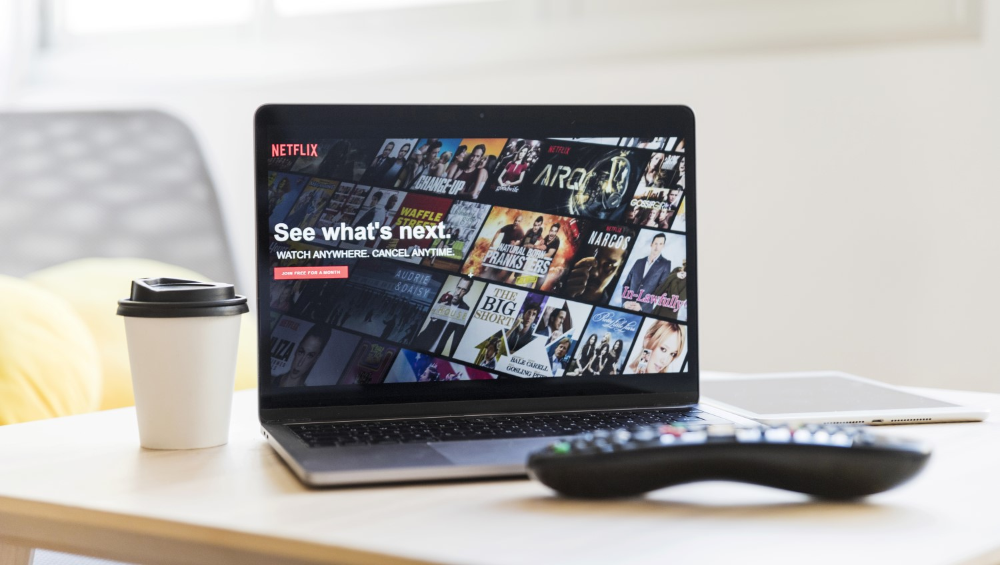
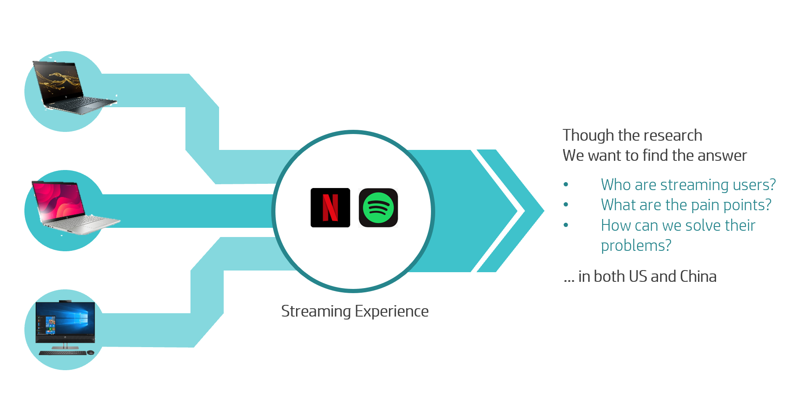
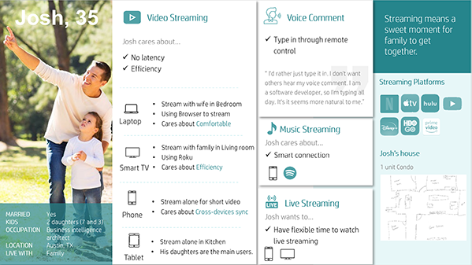
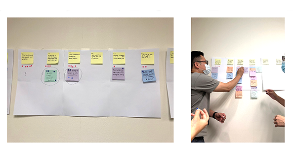
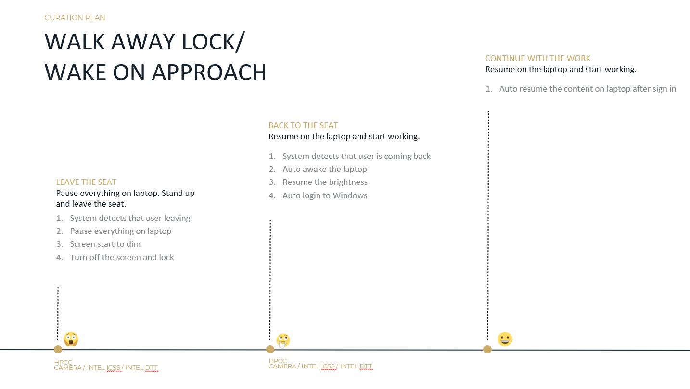
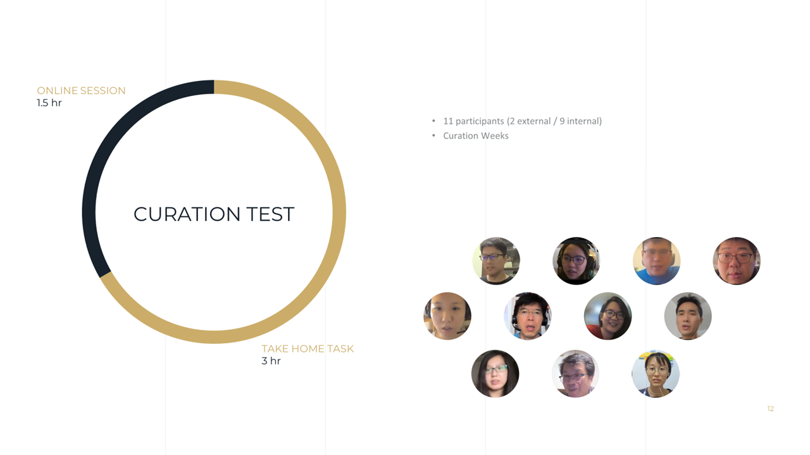
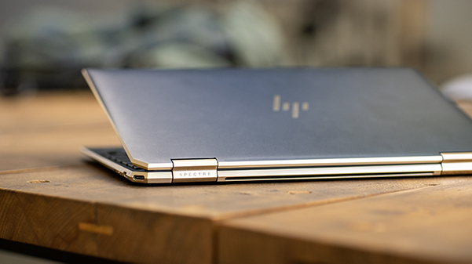

Streaming on Laptop — Experience Research
In 2021, HP set out to deliver a differentiated streaming experience on its next-generation consumer laptops — targeting two distinct markets: North America (where Netflix via browser dominated) and China (centered on the iQiyi platform). The goal of this research was to deeply understand how users stream, what environmental and device factors shape that experience, and what a truly premium streaming experience would mean for each market. Research findings informed the product's hero experience definition, curation criteria, and interaction design priorities through to launch.
I served as the sole UX researcher and experience curator on this project, responsible for end-to-end ownership — from defining the research scope and designing the interview protocol to facilitating design thinking workshops, mapping curation criteria, and overseeing remote usability testing. This project also marked the first time design thinking methodology was formally introduced to the laptop product core team.
— UX Researcher, Experience Curator
- Secondary Research
- In-depth Interview
- Persona
- Scenarios & Storyboards
- Affinity Diagram
- User Insight
- Curation Mapping
- Usability Testing
Approach

Step 1. Market Context & Research Scoping
With two culturally distinct target markets, the first step was to establish a clear research scope for each. In North America, the dominant streaming behavior centered on Netflix accessed via browser — pointing to a need to understand the native browser-based experience. In China, the iQiyi platform represented the primary use case, offering more opportunity for application-level integration. I defined separate research questions and screening criteria for each market, ensuring the study would surface insights specific to each context.

Step 2. In-Depth User Interviews
I recruited and interviewed 6 participants per market — 12 in total — screening for active streaming behavior across a range of device setups and viewing environments. Interviews explored daily streaming routines, environmental factors (lighting, seating, audio setup), device preferences, and pain points with current laptop streaming experiences. Affinity diagram analysis transformed raw interview notes into clustered insights, surfacing 23 distinct user needs spanning display quality, audio immersion, connectivity stability, and session continuity.

Step 3. Design Thinking Workshop
I facilitated a design thinking workshop with the core product team — Industrial Design, Software, and Product Management — to translate research findings into product priorities. Using structured activities including affinity mapping and experience prioritization, the session produced a shared set of hero experiences for each market and aligned stakeholders around the experience success criteria that would guide development decisions.

Step 4. Experience Curation & Success Criteria
With hero experiences defined, I developed 9 curation maps tracing each key experience through every hardware and software touchpoint. These maps served as a shared contract between research, design, and engineering: each touchpoint had a defined expected behavior, and meeting these criteria became the team's quality benchmark for the product. I remained actively involved throughout the development cycle, reviewing builds against curation criteria and flagging gaps before launch.

Step 5. Remote Usability Testing
Due to COVID-19 restrictions, usability testing was conducted remotely. Devices were shipped directly to 10 participants, and I hosted structured online sessions to validate whether the defined hero experiences were being delivered as intended. Sessions were task-based, covering key streaming scenarios across both browser and application contexts. Testing surfaced 70+ usability findings, which were prioritized by impact and fed back into the final development sprint before launch.
Result
23
User Needs
9
Curation Maps
70+
Usability Findings

The laptop launched in late 2021, delivering a differentiated streaming experience across both the North American and China markets. The research-to-curation framework developed in this project — from user insight to hero experience definition to validated testing — became a reusable model applied in subsequent HP product research programs.